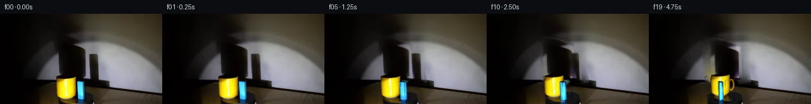

![首帧]()

Round 00
2026-11-05T05:01:43.808247+00:00像素候选变化代码 +357/−0inspection 更新
pixels c3e9147504e16687 · code afd2eb45b4d3bbdf
查看本轮 generate.py 真实 diff
--- previous/generate.py
+++ current/generate.py
@@ -0,0 +1,357 @@
+"""Local pixel-based continuation: textured 2.5D orbit and calibrated shadow warps."""
+from pathlib import Path
+import json
+import numpy as np
+import cv2
+from PIL import Image, ImageDraw
+from scipy.ndimage import distance_transform_edt
+from artifact_io import save
+
+ROOT = Path(__file__).resolve().parent
+W, H = 256, 144
+I = np.array(Image.open(ROOT / 'first_frame.png').convert('RGB'), dtype=np.float32)
+Y, X = np.mgrid[:H, :W].astype(np.float32)
+CENTER = np.array([118., 134.], dtype=np.float32)
+K = .325
+CUP = np.array([-14., 2.0], dtype=np.float32)
+BLOCK = np.array([9.8, 6.8], dtype=np.float32)
+LIGHT = np.array([-32., 125.], dtype=np.float32)
+WALL_DEPTH = -67.
+
+
+def polygon(points, soft=0):
+ scale = 8
+ m = np.zeros((H*scale, W*scale), np.uint8)
+ cv2.fillPoly(m, [np.rint(np.array(points)*scale).astype(np.int32)], 255)
+ m = cv2.resize(m.astype(np.float32)/255, (W,H), interpolation=cv2.INTER_AREA)
+ if soft:
+ m = cv2.GaussianBlur(m, (0,0), soft)
+ return m
+
+
+def ellipse(cx, cy, rx, ry, softness=.6):
+ r = np.sqrt(((X-cx)/rx)**2+((Y-cy)/ry)**2)
+ return np.clip((1-r)*min(rx,ry)/softness+.5,0,1)
+
+
+cup_mask = polygon([(89,103.1),(90,101.5),(99,100.3),(112,99.6),
+ (118.8,100.0),(119.7,103.5),(119.9,119),
+ (119.1,126.7),(117.9,130.3),(114.9,133.1),
+ (109.7,135.3),(100.8,135.9),(94,133.8),
+ (91.1,131.4),(89.6,128.2),(88.9,121),(88.5,111)])
+block_mask = polygon([(121.3,107.2),(123.2,106.7),(130.8,107.0),
+ (132.8,108.0),(133.3,127.3),(134,134.6),
+ (131.7,137.0),(123.0,136.4),(122.2,130.2)])
+cup_ref = polygon([(94,135),(116,134),(123,140),(122,143.9),
+ (96,143.9),(93,139)])
+block_ref = polygon([(122,135.8),(134,135.8),(135,143.9),(121,143.9)])
+cup_shadow_mask = polygon([(82,33),(112,37),(139.5,48),(141,102.5),
+ (135,106.3),(92,104.5),(85,90)], 1.2)
+block_shadow_mask = polygon([(136.5,59.5),(156,60),(162,110),
+ (141,114),(137,101)], .8)
+# A stationary strip below the moving silhouettes is the shadow of the round plate.
+# It stays in the photographic backdrop, as a circular plate's silhouette is invariant.
+shadow_union = np.clip(cup_shadow_mask+block_shadow_mask,0,1)
+shadow_hard = shadow_union > .015
+
+# Harmonic continuation of the softly lit wall through the original object shadows.
+# Boundaries come only from this initial image; no external image or model is used.
+smoothed = cv2.GaussianBlur(I,(0,0),1.3)
+wall = cv2.inpaint(np.uint8(smoothed), np.uint8(shadow_hard)*255, 5, cv2.INPAINT_NS).astype(np.float32)
+for _ in range(2500):
+ neighbor = cv2.filter2D(wall,-1,np.array([[0,.25,0],[.25,0,.25],[0,.25,0]],np.float32),borderType=cv2.BORDER_REFLECT)
+ wall[shadow_hard] = neighbor[shadow_hard]
+# Fixed fine wall texture avoids a completely smooth, conspicuous exposed patch.
+noise = I-cv2.GaussianBlur(I,(0,0),.75)
+wall += noise*.30*shadow_union[...,None]
+wall = I*(1-shadow_union[...,None])+wall*shadow_union[...,None]
+
+# Remove foreground and its colored plate reflections. Rebuild their hidden support
+# with locally sampled tabletop and the dark elliptical turntable surface.
+fg_remove = np.maximum.reduce([cup_mask, block_mask,cup_ref,block_ref])
+fg_hard = cv2.dilate(np.uint8(fg_remove>.025),np.ones((3,3),np.uint8))
+backdrop = cv2.inpaint(np.uint8(np.clip(wall,0,255)),fg_hard*255,4,cv2.INPAINT_TELEA).astype(np.float32)
+blur = cv2.GaussianBlur(I,(0,0),1.5)
+left = blur[:,80:86].mean(axis=1)
+right = blur[:,155:161].mean(axis=1)
+f = np.clip((X-83)/75,0,1)
+floor = left[:,None,:]*(1-f[...,None])+right[:,None,:]*f[...,None]
+floor += noise*.35
+seam = 104.5+.085*X
+floor_area = (Y>seam+2) & (fg_hard>0)
+backdrop[floor_area] = floor[floor_area]
+plate_top = ellipse(118,134,29.6,10.4,.55)
+plate_side = ellipse(118,136.1,29.7,10.4,.55)*(1-plate_top)
+radius = np.sqrt(((X-118)/29.6)**2+((Y-134)/10.4)**2)
+plate_color = np.stack([18.5+3.2*(X-118)/30,18.2+3.8*(X-118)/30,
+ 20.1+4.2*(X-118)/30],axis=-1)
… diff truncated; 270 more lines …